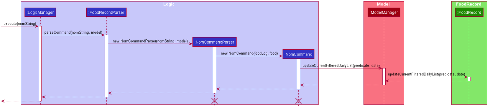

By: Team F11-1 Since: March 2020 Licence: MIT
- 1. About this guide
- 2. Setting up
- 3. Design
- 4. Implementation
- 4.1. Configuration
- 4.2. Command guide
helpcommand - 4.3. Exporting the current
FoodRecordinto a .txt file - 4.4. Searching for specific
Foodvia categories and substrings - 4.5.
Foodconsumption management - 4.6. Generate insights report
- 4.7. Lexicographical
Foodorder - 4.8. Logging
- 4.9. Updating
FoodRecord - 4.10. Past seven days calorie data graph
- 5. Documentation
- 6. Testing
- 7. Dev Ops
- Appendix A: Product Scope
- Appendix B: User Stories
- Appendix C: Use Cases
- Appendix D: Non Functional Requirements
- Appendix E: Glossary
- Appendix F: Instructions for Manual Testing
1. About this guide
This Developer Guide is a document to guide future software developers of the Calgo App by providing a sufficient and comprehensible overview of the project.
While we aim to provide a reasonable amount of depth, do keep in mind that the goal of this document is not to serve as a replacement for reading the actual code.
Welcome on-board the Software Development Team for Calgo! Together, we will inspire a healthier lifestyle!
2. Setting up
Refer to the guide here.
3. Design
3.1. Architecture
|
Tip
|
The .puml files used to create diagrams in this document can be found in
the diagrams folder.
Refer to the Using PlantUML guide to learn how to create and edit diagrams.
|
The Architecture Diagram given above describes the high-level design of the Calgo Application. From now on, all instances of Calgo Application will be referred to as App. Given below is a quick overview of each component.
The Main component comprises of two classes called Main and
MainApp.
This component is responsible for:
-
Launching App: Initializes the other components in the correct sequence, and connects them up with each other.
-
Exiting App: Shuts down the components and invokes cleanup method where necessary.
Commons represents a collection of classes used by multiple other components.
In particular, the LogsCenter class plays an important role at the architecture level:
-
LogsCenter: Writes log messages to the App’s log file, for various classes.
The rest of the App comprises of four components.
Each of the four components:
-
Defines its Application Programming Interface (API) in an
interfacewith the same name as the Component. -
Exposes its functionality using a
{Component Name}Managerclass.
For example, the Logic component (see the class diagram given below) defines its API in the Logic.java interface and exposes its functionality using the LogicManager.java class.
How the architecture components interact with each other
The Sequence Diagram below shows how the components interact with each other for the scenario where the user issues the command delete n/Apple.
delete n/Apple commandThe sections below give more details of each component.
3.2. UI component
API : Ui.java
The UI consists of a MainWindow that is made up of parts e.g.CommandBox, ResultDisplay, FoodListPanel, DailyListPanel, StatusBarFooter etc. All these, including the MainWindow, inherit from the abstract UiPart class.
The UI component uses JavaFx UI framework. The layout of these UI parts are defined in matching .fxml files that are in the src/main/resources/view folder. For example, the layout of the MainWindow is specified in MainWindow.fxml
The UI component:
-
Executes user commands using the
Logiccomponent. -
Listens for changes to
Modeldata so that the UI can be updated with the modified data.
3.3. Logic component
API :
Logic.java
-
Logicuses theFoodRecordParserclass to parse the user command. -
This results in a
Commandobject which is executed by theLogicManager. -
The command execution can affect the
Model(e.g. adding a food). -
The result of the command execution is encapsulated as a
CommandResultobject which is passed back to theUi. -
In addition, the
CommandResultobject can also instruct theUito perform certain actions, such as displaying help to the user.
Given below is the Sequence Diagram for interactions within the Logic component for the execute("delete n/Apple") API call.
delete n/Apple Command|
Note
|
The lifeline for DeleteCommandParser should end at the destroy marker (X) but due to a limitation of PlantUML, the lifeline reaches the end of diagram.
|
3.4. Model component
API : Model.java
-
Modelstores user’s preferences in aUserPrefobject. -
Modelalso stores Food Record data. -
This component exposes both
ObservableList<Food>andObservableList<ConsumedFood>. The data stored in these two list objects is reflected in UI. Therefore, any changes made to the data in these lists are shown in the UI in real-time. -
To update the
Model(and hence reflect the changes in the UI),Foodattributes need to satisfy certainPredicates, which represent these changes. -
This component does not depend on any of the other three components.
|
Note
|
To make Model follow the Object Oriented Programming (OOP) Paradigm more closely,
we can store a Tag list in Food Record, which Food objects can reference.
This would allow Food Record to only require one Tag object per unique Tag,
instead of each Food needing their own Tag object.
An example of how such a model may look like is given in the below diagram. |
3.5. Storage component
API : Storage.java
The Storage component allows us to save FoodRecord, UserPref, Goal, and ConsumptionRecord data in json format onto the disk, and read them back later on during the next session.
This would facilitate the following functions:
-
Load past user App data and preferences.
-
Generate and save insights reports based on previously and currently recorded user consumption.
-
Generate and save a user-friendly version of the accumulated
FoodRecord.
3.6. Common classes
Classes used by multiple components are in the life.calgo.commons package.
4. Implementation
This section describes some noteworthy details on how certain features are implemented.
4.1. Configuration
Certain properties of the App can be controlled (e.g user prefs file location, logging level) through the configuration file (default: config.json).
As with any application with a plethora of commands, it is useful to have an in-app and offline method by which users can view the purpose and usage format of each command.
This help feature is a functionality that is carried out by the FoodRecordParser to guide users on how to utilise the App’s commands. The guide is displayed in a separate window, as handled by HelpWindow.
With this, a top-level idea of the execution of the help command is given in the sequence diagram below:
4.2. Command guide help command
This section addresses how the help command works.
The help command allows us to reference a summarised version of the User Guide (called the command guide)
containing the usages of the commands and their formats, arranged in alphabetical order. Users may enter an
optional Command_word that filters the displayed command guide.
|
Note
|
Command_word filters out only commands which contain the Command_word as a substring. If no commands contain it
as a substring, an error message will be displayed at the top of the HelpWindow and the full command guide will be shown.
|
4.2.1. Implementation
Step 1: LogicManager takes in the user input of "help".
Step 2: FoodRecordParser is passed the String input and is parsed using parseCommand.
Step 3: This results in a HelpCommand object which is executed by the LogicManager.
Step 4: The LogicManager encapsulates the result as a CommandResult object which is passed back to the MainWindow.
Step 5: The MainWindow executes the handleHelp() method, displaying the HelpWindow if it is not already being displayed.
Step 6: HelpWindow is displayed as a separate popup.
4.2.2. Design considerations
Aspect: How Help is displayed
-
Alternative 1 (current choice):
HelpWindowis displayed as a separate popup.-
Pros:
-
User can refer to the command guide in a window separately from Calgo, keeping it present as they use the App.
-
Command guide can give a more detailed description of command usage and format as it has more space to display in.
-
No internet access is required as all information on commands is stored offline.
-
-
Cons:
-
helpdoes not redirect to a url containing the most up-to-date User Guide. Changes made to the User Guide must be updated inHelpCommandseparately. -
HelpWindowmight obstruct view of the App upon initially loading it, causing annoyance.
-
-
-
Alternative 2:
HelpWindowis not used, and instead content is displayed as part ofResultDisplay.-
Pros:
-
No possibility of a popup blocking the main app.
-
All information is contained within a single window.
-
-
Cons:
-
User must use the
helpcommand every time they require a guide, asResultDisplaywill be overwritten after other commands.
-
-
Aspect: Command guides can be selectively displayed
-
Alternative 1 (current choice):
helpdisplays all command guides by default. User can selectively filter to display only desired commands by entering an optional keyword afterhelp.-
Pros:
-
Desired command can be more rapidly found.
-
Removes all unwanted commands from
HelpWindow, reducing clutter.
-
-
Cons:
-
Filtered
helpdoes not benefit users who don’t know the command they’re looking for.
-
-
-
Alternative 2: Always display all command guides to ensure user will find the guide they require.
-
Pros:
-
No possibility of user being unable to find their desired command after sufficient searching.
-
-
Cons:
-
Relatively large array of commands can be overwhelming to a new user, deterring them from using the App.
-
Can be very frustrating to search through for experienced users.
-
-
4.2.3. Summary
help will produce a popup, displaying a guide on the App’s available commands' purposes and usage format.
4.3. Exporting the current FoodRecord into a .txt file
(by Eugene)
This section addresses how the export command works, creating a FoodRecord.txt file showing details of all the Food objects currently stored in the FoodRecord. The information is presently neatly in table form and the file is created in the data/exports folder.
The export command mainly uses an ExportGenerator object to generate the file. All formatting options and methods to write the contents of the file are included in the ExportGenerator class, which extends the DocumentGenerator class.
|
Note
|
You may find the report command similar as they both create a new file for the user. You can read more about it here.
|
4.3.1. Implementation
Most of the work in generating the file is done by the generateExport method of ExportGenerator. You can access the class to view its methods for writing the header and footer components, which are relatively easily to understand.
However, the methods for writing the file body is likely where some explaining is required. Here, the formatting of the table body is determined by the following:
private static final int NAME_COLUMN_SIZE = 45;
private static final int VALUE_COLUMN_SIZE = 20;NAME_COLUMN_SIZE represents the allowed space for the Name. If a Food object has a Name which is too long, the Name will be truncated and continued on the following lines.
Meanwhile, VALUE_COLUMN_SIZE represents the allowed space for each nutritional value of Calorie, Protein, Carbohydrate, and Fat in the table. These are guaranteed to be within a length of 5 characters when parsing, and should not exceed the given space.
The nutritional values will always be shown in the first line of their respective Food object after its (possibly truncated) Name. This is facilitated by the printBody method of ExportGenerator, which calls its printBodyComponent method and subsequently its generateFinalisedEntryString method, which performs the truncation and amendment of the Name as necessary.
Moving on, the sequence diagram below demonstrates how the export command works to create the user copy of the current FoodRecord:
export command: generating FoodRecord.txt|
Note
|
The lifeline for the ExportCommand object and that of the ExportGenerator object should end at their destroy markers (X) but due to a limitation of PlantUML, the lifelines reach the end of diagram.
|
From the above, creating FoodRecord.txt involves the following steps:
Step 1: LogicManager executes the user input, uses CalgoParser to realise this is a export command, and thereby creates a new ExportCommand object.
Step 2: LogicManager then calls the execute method of this ExportCommand object. This results in a call to the Model to get the current FoodRecord, which is used to construct a new ExportGenerator object. The ExportGenerator is responsible for creating the FoodRecord.txt file and writing to it.
Step 3: ExportCommand then calls the generateExport method of ExportGenerator, writing the required parts to the file. This returns a boolean indicating whether the file creation and writing are successful.
Step 4: A new CommandResult object indicating the status of the execution is then constructed and reflected in the GUI.
4.3.2. Design considerations
Aspect: Type of file to create.
-
Alternative 1 (current choice): Create a .txt file to represent the
FoodRecord.-
Pros:
-
Satisfies user requirements: able to edit the file to include custom entries.
-
-
Cons:
-
Need to define new classes and methods for file writing, which may introduce more dependencies.
-
May be more resource-intensive than other alternatives.
-
New developers may be unfamiliar with
Stringmanipulation and regular expressions.
-
-
-
Alternative 2: Create a .pdf file to represent the
FoodRecord-
Pros:
-
The contents appear to be more legitimate.
-
Can use external libraries for convenience.
-
May be less resource-intensive.
-
-
Cons:
-
May not satisfy user requirements as the file cannot be edited easily.
-
May introduce more bugs, additional dependencies, and become prone to external factors.
-
More difficult to debug due to lack of familiarity with external libraries.
-
May require more space.
-
-
Aspect: Abstraction for ExportGenerator and ReportGenerator.
-
Alternative 1 (current choice): Create
DocumentGeneratorabstract class which bothExportGeneratorandReportGeneratorextends.-
Pros:
-
Good Object-Oriented Programming practice, following its principles.
-
Allows for code reuse and neater code.
-
Able to apply concepts of polymorphism, if required.
-
May be now easier to debug.
-
-
Cons:
-
Need to define new class, possibly introducing more dependencies.
-
Need to identify what is common to both
ExportGeneratorandReportGenerator.
-
-
-
Alternative 2: Use an interface which both classes will implement.
-
Pros:
-
Similar to Alternative 1.
-
-
Cons:
-
Does not allow methods to be defined in the interface. (Some exceptions: default methods, etc)
-
May need to repeat definitions which may be the same for both classes.
-
-
-
Alternative 3: Do not use an interface or abstract class.
-
Pros:
-
Requires less effort.
-
Does not introduce additional dependencies.
-
-
Cons:
-
Unable to reap benefits of the above alternatives.
-
-
4.3.3. Summary
This section addresses how users are able to obtain an editable copy of the current FoodRecord using the export command.
The export command largely relies on the ExportGenerator class. This facilitates creating the file and writing to it.
The above can be summarised in the activity diagram below:
4.4. Searching for specific Food via categories and substrings
(by Eugene)
This section addresses how the find and list commands work. As they are complementary in their functions during the search process, both find and list commands will be explained together here for better coherence.
The find command allows us to search through the FoodRecord (via categorical or substring search) based on what the user enters for the Prefix. Users may enter one and only one Prefix. The search results can then be displayed in the GUI’s Food Record.
Meanwhile, the list command allows us to reset the GUI’s Food Record to once again show all entries in lexicographical order. This can be thought of as the reverse of a find command. However, unlike the find command, the list command does not use any Prefix, and ignores any input after its command word.
|
Note
|
Prefix here indicates which Food attribute we are interested in. Categorical search finds Food objects with values that match the user-specified value representing one of the nutritional categories (Calorie, Protein, Carbohydrate, or Fat). Meanwhile, substring search finds matches for the user-entered substring in any part of the the Name or in any of the Tag objects belonging to the Food objects.
|
|
Note
|
For more information on lexicographical ordering, please refer to its relevant section here. |
The above commands rely on the FindCommand and ListCommand objects respectively. Objects of both classes use a Predicate<Food> object to filter through the current Food objects, where Food objects will be displayed in the GUI’s Food Record should they evaluate these predicates to be true.
4.4.1. Implementation
To search via a particular Food attribute, we use a FindCommandParser to create the corresponding Predicate<Food> based on which Food attribute the Prefix entered represents. This predicate is then used to construct a new FindCommand object, which changes the GUI display when executed.
The class diagram below shows the relevant Predicate<Food> classes used in the construction of FindCommand objects.
FindCommand objectsAs seen in the above class diagram, each Predicate<Food> is indeed representative of either Name, Calorie, Protein, Carbohydrate, Fat, or Tag. Moreover, it should be noted that each of these predicates test against a Food object, and therefore have a dependency on Food.
The sequence diagram below demonstrates how the find command works, for both categorical and substring search:
find command: categorical search and substring search|
Note
|
The lifeline for the both of the FindCommandParser objects, and both of the FindCommand objects should end at their destroy markers (X) but due to a limitation of PlantUML, the lifelines reach the end of diagram.
|
From the above, it is clear that both categorical search and substring search of the find command have similar steps:
Step 1: LogicManager executes the user input, uses CalgoParser to realise this is a find command, and creates a new FindCommandParser object.
Step 2: The FindCommandParser object parses the user-entered arguments that match the Prefix, creating a Predicate<Food> object based on which Food attribute the Prefix represents.
-
In the above diagram examples, a
ProteinContainsKeywordsPredicateobject is created for the categorical search viaProteinwhile aNameContainsKeywordPredicateobject is created for the substring search viaName.
Step 3: This Predicate<Food> object is then used to construct a new FindCommand object, returned to LogicManager.
Step 4: LogicManager calls the execute method of the FindCommand created, which filters for Food objects that evaluate the predicate previously created to be true. It then returns a new CommandResult object reflecting the status of the execution. These changes are eventually reflected in the GUI.
The find command therefore searches through the existing FoodRecord and then displays the relevant search results in the GUI’s Food Record. To once again show all Food entries in the display, we use the list command.
In constrast to FindCommand, the ListCommand constructor takes in no arguments and simply uses the predicate Model.PREDICATE_SHOW_ALL_FOODS to always show all Food entries in its execute method. This is described by the sequence diagram below:
list command|
Note
|
The lifeline for the ListCommand object should end at the destroy marker (X) but due to a limitation of PlantUML, the lifeline reaches the end of diagram.
|
How the list command works:
Step 1: LogicManager executes the user input, uses CalgoParser to realise this is a list command and thereby create a new ListCommand object.
Step 2: LogicManager then calls the execute method of this ListCommand, which uses Model.PREDICATE_SHOW_ALL_FOODS to evaluate to true for all Food objects in the FoodRecord.
Step 3: The GUI’s Food Record reflects the above changes to show all Food entries.
4.4.2. Design considerations
Aspect: Predicate construction source.
-
Alternative 1 (current choice): Each
Predicate<Food>is constructed using a new object of type eitherName,Calorie,Protein,Carbohydrate,Fat,Tag.-
Pros:
-
Defensive programming by building new objects rather than relying on mutable sources.
-
Can reuse existing code and classes like ArgumentMultimap and their methods.
-
Models objects well to reflect the real-world.
-
-
Cons:
-
May be more resource-intensive than other alternatives.
-
New developers may not find this intuitive.
-
-
-
Alternative 2: Each
Predicate<Food>is created using aStringwhich represents the keywords.-
Pros:
-
Easier to implement with fewer existing dependencies.
-
Less resource-intensive.
-
-
Cons:
-
More prone to bugs.
-
Difficult to ascertain which
Foodattribute it actually represents. -
More difficult to debug as
Stringtype is easily modified. -
Does not reflect good Object-Oriented Programming practices
-
-
Aspect: Enabling substring search.
-
Alternative 1 (current choice): Allow substring search for both
NameandTag-
Pros:
-
Improves user experience.
-
Can reuse common code as the approach for both
NameandTagare similar. -
Generally easy to implement substring finding.
-
Can use regular expressions if needed, which are powerful and suitable for our purpose.
-
-
Cons:
-
Requires good understanding of the original project.
-
Need to know the
Stringtype, regular expressions, and their implications. -
Need to implement searching via multiple types of
Foodattributes and hence introduces more dependencies. -
Need to implement a new
Parserclass to detect each relevantPrefix.
-
-
-
Alternative 2: Only allow exact word matches for
NameandTag-
Pros:
-
Can simply reuse large parts of the original project’s existing code.
-
Less prone to bugs.
-
Easy for new Computer Science student undergraduates to understand, who are likely to be the new incoming developers of our project.
-
-
Cons:
-
Diminishes user experience.
-
May not fully satisfy the user requirements.
-
Need to implement searching via multiple types of
Foodattributes and hence introduces more dependencies. -
Need to implement a new
Parserclass to detect each relevantPrefix.
-
-
4.4.3. Summary
In essence, this section focuses on searching which is implemented via find and list commands.
The find command performs a categorical search if a value from a nutritional category (Calorie, Protein, Carbohydrate, Fat) is specified. Otherwise, a substring search is performed to find Food objects that contain the entered substring in their Name or in one of their Tag s. These rely on the Predicate<Food> object used in constructing the FindCommand, which depend on the Prefix entered by the user.
Meanwhile, the list command simply uses the predicate already defined in Model to display all Food objects.
The above can be summarised in the activity diagram below:
4.5. Food consumption management
In Calgo, you will find that there is a date associated with each list of ConsumedFood.
When adding food to be consumed, removing food, or displaying food consumed on certain days,
a FilteredList will be populated with relevant ConsumedFood.
4.5.1. Implementation
The nom, vomit and stomach commands are facilitated by the FoodRecord.
FoodRecord contains a UniqueDateToLogMap, which maps a LocalDate to a DailyFoodLog.
DailyFoodLog contains a LinkedHashMap storing Food in the sequence that they were consumed and maps those Food to a Double portion.
This section covers how the nom command is implemented. The vomit and stomach commands work in very similar way, hence their implementation is omitted for brevity.
A top-level illustration of the execution of a nom command is given in the sequence diagram below:

Step 1: User enters a command, which is saved as a String and passed into the LogicManager.
Step 2: The String cascades down the layers of abstraction until NomCommandParser handles it and creates a
DailyFoodLog which reflects the consumption.
Step 3: A NomCommand is created and executed, updating both ModelManager and FoodRecord about the consumed food.
Step 4: A FilteredList in ModelManger will then check with FoodRecord to create ConsumedFood items to display in the Graphical User Interface (GUI).
Step 5: The GUI automatically detects changes in FilteredList and refreshes to display updated content.
4.5.2. Design considerations
Aspect: How nom executes
-
Alternative 1 (current choice): Create a new
DailyFoodLogto pass intoModelManagerandFoodRecord.-
Pros: Maintain comprehensive layers of abstraction and allows code to be easily testable.
-
Cons: Difficult for newcomers or even existing users to trace because of long execution path.
-
-
Alternative 2: Bypass
ModelManageror even not useFoodRecordfor storage of data during runtime by allowing everything to be done from parser.-
Pros: Reduce dependencies on
ModelManagerandFoodRecord, and make code contained in a single class file easier to navigate. -
Cons: Violates layers of abstraction set in place by previous structure of AddressBook3. Violates Single Responsibility Principle and reduce cohesiveness of code.
-
Aspect: Data structure to support the consumption commands
-
Alternative 1 (current choice): Use a single
FilteredListto store food for any day by repopulating it each time a consumption related command is used.-
Pros: Only uses a single
FilteredList, so it is clear which list you are using for display. -
Cons: May have performance issue in terms of speed when there are too many entries.
-
-
Alternative 2: Use a
FilteredListfor each date, to store food consumed on that date.-
Pros: Faster retrieval for display of
ConsumedFooditems. However, under practical circumstances, the difference is negligible. -
Cons: May have performance issue in terms of storage because it requires many lists to be stored in addition to
LinkedHashMapinDailyFoodLogfor eachLocalDate.
-
4.5.3. Summary
The nom command adds a Food item consumed by the user into the stomach. The following activity diagram summarizes what happens when the user executes a nom command.
4.6. Generate insights report
This feature allows a user to generate a report that contains statistics and deliverable insights based on personal food consumption patterns.
The functionality can be invoked by entering the report d/DATE command.
This command generates a report that is based on the food consumed by
the user on the specified date.
4.6.1. Implementation
The specified feature is facilitated by ReportGenerator class in the Storage component.
In this section, the implementation features of the ReportGenerator class will be further explained.
ReportGenerator class implements the following operation:
-
ReportGenerator#generateReport()- Creates report containing an analysis of all food consumed by user on the given date when inputting thereportcommand.
Whenever the report d/DATE command is given by the user, the ReportGenerate#generateReport() operation is called.
The following sequence diagram illustrates the top-level execution of the generateReport() operation:
Step 1: User inputs report d/2020-03-27 to generate the insights report based on food consumption of 27 March 2020.
Step 2: This input is saved as a String and passed into the LogicManager.
Step 3: The String input is parsed by FoodRecordParser, which removes the "d/" prefix tag and sends
the date input to ReportCommandParser.
Step 4: Once the ReportCommandParser checks that the given date is valid, it creates a ReportCommand object and
returns it to LogicManager.
Step 5: LogicManager then executes the ReportCommand.
Step 6: From Model, ReportCommand retrieves the DailyFoodLog object that stores all Food consumed on the input date.
Step 7: From Model, ReportCommand also retrieves DailyGoal object, which stores the daily number of calories the user wants to consume.
Step 8: With the relevant objects retrieved from Steps 6 and 7, ReportCommand constructs a
ReportGenerator object.
Step 9: Using the ReportGenerator object, ReportCommand calls #generateInsights(), which prints metainformation
, food-wise statistics, aggregate statistics and insights based on the DailyFoodLog of the input date.
Step 10: This newly generated report is saved in the /reports folder. If the report is successfully generated,
the CommandResult is true. Otherwise, it is false. This CommandResult object is finally returned to LogicManager,
to signify the end of the command.
4.6.2. Design considerations
Aspect: How generate report executes
-
Alternative 1 (current choice): Print insights into a .txt file.
-
Pros: The implementation allows users to easily edit the contents of the report should they have realised they did not log in certain food items on that day.
-
Cons: Users could cheat by modifying values in the report. This defeats the purpose of the report to improve their self-awareness of their food consumption patterns.
-
-
Alternative 2: Print insights into a pdf file.
-
Pros: The insights appear more legitimate and neatly formatted.
-
Cons: Requires use of external libraries, which occupy memory of the App. PDF files generally require more memory than .txt files as well.
-
4.6.3. Summary
The following activity diagram summarizes what happens when user executes a report d/DATE command:
4.7. Lexicographical Food order
(by Eugene)
This section addresses how the GUI Food Record entries appear in lexicographical order, which is an effect of sorting Food objects in the FoodRecord.
Over time, users will eventually have many Food entries — these should be sorted for a better experience. Intuitively, the lexicographical order is the most suitable here.
In essence, Food objects are sorted by the UniqueFoodList (which is inside FoodRecord).
Sorting is performed each time Food object(s) are newly added to the UniqueFoodList, edited by the user, or when the UniqueFoodList is initialised during App start-up.
There is no need to re-sort during deletion as the order is maintained.
|
Note
|
For a better understanding of adding and editing Food objects using the update command, please refer to its relevant section here.
|
|
Note
|
Although the the list command changes the GUI Food Record display, it does not actually perform sorting. It simply resets the GUI Food Record to show all Food entries, and is usually used after a find command. You can read more about them here.
|
4.7.1. Implementation
The UniqueFoodList is able to sort Food objects because the Food class implements the Comparable<Food> interface.
This allows us to specify the lexicographical order for sorting Food objects via their Name, using the following compareTo method in the Food class:
public int compareTo(Food other) {
String currentName = this.getName().toString();
String otherName = other.getName().toString();
return currentName.compareTo(otherName);
}How the sorting process works:
-
When the App starts up, a new
UniqueFoodListis created from the source json file (if available) or otherwise the default entries, and the createdFoodobjects are sorted as they are added to it. -
Existing
Foodobjects are therefore arranged in lexicographic order byName. -
Thereafter,
UniqueFoodListsorts theFoodobjects whenever they are added or edited in theModel.
The sequence diagram below shows how the lexicographical ordering is performed when Calgo starts up:
Based on the above diagram, when Calgo starts:
Step 1: We initialise the ModelManager object. For this, we use previously stored user data if available (by reading in from the source json files). Otherwise, we use the default Calgo Food entries.
Step 2: Before we can finish constructing a new ModelManager object, we require the creation of a new FoodRecord object which in turn requires the creation of a new UniqueFoodList object.
Step 3: Once UniqueFoodList is constructed, we introduce the initialising data into it using the setFood method. This calls the sortInternalList method, which sorts the newly added Food objects in the ObservableList<Food> contained in UniqueFoodList, according to the specified lexicographical order (defined in the Food class).
Moving on, the sequence diagram below (which is a reference frame omitting irrelevant update command details) describes the lexicographical sorting process when Food objects are added or edited using the update command:
update section here)Based on the above diagram, after parsing the user input and creating an UpdateCommand object:
-
If the user inputs a
Foodobject that already has an existing counterpart with an equivalentNamein theUniqueFoodListobject:-
Step 1: The
UpdateCommandobject calls thegetExistingFoodmethod of theModelManagerfor the user-enteredFood, which then calls that ofFoodRecord, and subsequently that ofUniqueFoodListto eventually obtain the existingFoodobject with an equivalentName. -
Step 2: Using the same sequence of classes, we call the respective
setFoodmethods, eventually replacing the existingFoodobject with the desired one and arriving at thesortInternalListmethod ofUniqueFoodList. -
Step 3: The
sortInternalListmethod then sorts theObservableList<Food>contained inUniqueFoodList, according to the specified lexicographical order defined in theFoodclass.
-
-
Otherwise, the user-entered
Foodis an entirely newFoodobject without aName-equivalentFoodthat exists in theUniqueFoodList:-
Step 1: Using the same sequence of classes as the former case, we call the
addFoodandaddmethods of the respective classes, eventually adding theFoodobject and arriving at thesortInternalListmethod ofUniqueFoodList. -
Step 2: The
sortInternalListmethod then sorts theObservableList<Food>contained inUniqueFoodList, according to the specified lexicographical order defined in theFoodclass.
-
Any re-ordering will eventually be reflected in the GUI, facilitated by the following (in the case of a list command) or otherwise something similar:
model.updateFilteredFoodRecord(Model.PREDICATE_SHOW_ALL_FOODS);4.7.2. Design considerations
Aspect: Frequency of sorting operation.
-
Alternative 1 (current choice): Sort whenever a new
Foodis added or edited.-
Pros:
-
Guarantees correctness of sorting.
-
Saves on computational cost by not sorting during deletion as the order is maintained.
-
Computational cost is not too expensive since the introduced
Foodobjects usually come individually rather than as a collection (except during App start-up).
-
-
Cons:
-
Need to ensure implementations of various commands changing the
Modelare correct and do not interfere with the sorting process. -
May be computationally expensive if there are many unsorted
Foodobjects at once, which is possible when Calgo starts up.
-
-
-
Alternative 2: Sort only when calling the
listcommand.-
Pros:
-
Easier to implement with fewer existing dependencies.
-
Uses less computational resources since sorting is only done when
listcommand is called.
-
-
Cons:
-
Diminishes user experience.
-
May be incompatible with certain
Storagefunctions. -
May lead to bugs in overall product due to incompatible features.
-
-
Aspect: Data structure to store Food objects.
-
Alternative 1 (current choice): Use
UniqueFoodListto store allFoodobjects.-
Pros:
-
Can reuse existing code, removing the need to maintain a separate list-like data structure.
-
Based on existing code, any changes to the
Modelfrom the sorting process are automatically reflected in the GUI. This is very useful for testing and debugging manually.
-
-
Cons:
-
Many of the underlying
ObservableListmethods are built-in and cannot be edited. They are also difficult to understand for those unfamiliar. This can make development slightly trickier, especially in following certain software engineering principles.
-
-
-
Alternative 2: Use a simpler data structure like an
ArrayList.-
Pros:
-
Easy for new Computer Science student undergraduates to understand, who are likely to be the new incoming developers of our project.
-
-
Cons:
-
More troublesome as we require self-defined methods, abstracted over the existing ones. If not careful, these self-defined methods can possibly contain violations of certain software engineering principles, which may introduce regression in the future.
-
May be inefficient in using resources.
-
-
4.7.3. Summary
The UniqueFoodList facilitates the lexicographical ordering of Food objects and hence their respective entries in the GUI Food Record. This can be summarised in the activity diagram below:
4.8. Logging
We are using java.util.logging package for logging. The LogsCenter class is used to manage the logging levels and logging destinations.
-
The logging level can be controlled using the
logLevelsetting in the configuration file (See Section 4.1, “Configuration” below) -
The
Loggerfor a class can be obtained usingLogsCenter.getLogger(Class)which will log messages according to the specified logging level -
Currently log messages are output through:
Consoleand to a.logfile.
Logging Levels
-
SEVERE: Critical problem detected which may possibly cause the termination of the App -
WARNING: Can continue, but with caution -
INFO: Information showing the noteworthy actions by the App -
FINE: Details that is not usually noteworthy but may be useful in debugging e.g. print the actual list instead of just its size
4.9. Updating FoodRecord
This feature allows you to add a food preset with all its nutritional details into the FoodRecord.
This makes it convenient for you to keep track of your Food consumed in the day without having to manually key in the nutritional details every time you do so.
4.9.1. Implementation
The update mechanism is facilitated by FoodRecord and UpdateCommand. An additional operation was implemented into FoodRecord:
-
FoodRecord#hasExistingFood()- Checks if there is an existingFoodinFoodRecordbased on its name only
This operation was exposed in the Model interface as Model#hasExistingFood().
The update feature first checks if there is already an existing Food item with the same name
inside FoodRecord using the method FoodRecord#hasExistingFood().
If there is already an existing Food with the same name, the existing Food item will override the Food item inside FoodRecord with
the new nutritional information provided by the user.
Otherwise, the new Food item will be added into the FoodRecord.
The following sequence diagram shows how the update operation works in both cases:
|
Note
|
The lifeline for UpdateCommandParser and UpdateCommand should end at their destroy markers (X) but due to a limitation of PlantUML, the lifelines reach the end of diagram.
|
4.9.2. Design considerations
Aspect: Updating the FoodRecord when there is an existing Food item in FoodRecord
-
Alternative 1 (current choice): Overrides the existing
Fooditem with the newFooditem-
Pros: No need for a separate command of
editto deal with existingFooditem apart fromaddto add newFooditem into theFoodRecord. Instead, a smarter command ofupdateis used to deal with both scenarios. -
Cons: This might not be intuitive for the user since the word "update" is generally assumed to be for editing something only, and not necessarily adding something.
-
-
Alternative 2: Informs the user that there is already an existing
Fooditem, and direct him to use another functioneditto edit the existingFoodinstead.-
Pros: In the event where the user is unaware that there is already an existing
Fooditem, this two step process will be clearer to him that he is in fact editing aFooditem and not adding a new one in. -
Cons: This is more tedious for the user since more steps is required to change an existing
Fooditem. On top of that, an additional command ofeditwill be required andupdateshould be replaced withaddfor clearer user experience.
-
4.9.3. Summary
The update command is a smart command that either updates an existing Food item in the FoodRecord with new nutritional information,
or updates a new Food item into the FoodRecord
The following activity diagram summarises what happens when a user enters a valid update command:
4.10. Past seven days calorie data graph
(by Janice)
This section addresses how the graph displaying the user’s past seven day’s daily total calorie consumption works.
Note that the graph counts starting from the date on the current Food Record, and the six days prior to it.
The graph will always display the past seven days' data at the bottom of the app, and will update whenever app data is changed.
|
Note
|
If a command changes the date of the Food Record (such as nom or stomach), the graph will update to show data
for the past seven days from that date, inclusive.
|
4.10.1. Implementation
GraphPanel in the Ui component. It contains a LineChart of String date against Number calories, and is populated with
data from an XYChart.series. The data is in turn obtained from the Logic component, which provides only the past seven days'
of DailyFoodLog. The implementation of the GraphPanel class will be further explained.
GraphPanel class implements the following operations:
-
GraphPanel#initialiseTreeMap(Logic logic)- Sets up the TreeMap that mapsLocalDatedate ofDailyFoodLogto theDoubletotal calorie consumption n that day. -
GraphPanel#initialseGraph()- Sets up theLineChartwith xAxis aStringrepresenting date, and yAxis aDoublerepresenting total calories consumed on that date. -
GraphPanel#updateSeries()- Ensures theXYChart.seriesthat populates the graph with data is always updated with the most recent app data. -
GraphPanel#makeGraph(Logic logic)- Wrapper function that calls the above three methods. -
GraphPanel#getGraph(Logic logic)- Public accessor function to generate and retrieve theLineChart.
Calgo will display the past seven days' graph automatically, and likewise update automatically. It does so by having MainWindow
call GraphPanel#getGraph(Logic logic) on startup and after execution of commands.
The sequence diagram below demonstrates how the Graph feature works, such as upon loading of MainWindow.

Sequence Diagram for Graph feature.
Step 1: MainWindow requests for an instance of GraphPanel.
If no instance exists, a new GraphPanel is created. Otherwise one is retrieved. This ensures that GraphPanel
is a singleton.
Step 2: MainWindow calls GraphPanel again to generate the graph and add it to the GraphPanelPlaceholder inside MainWindow.
Step 3: Inside GraphPanel, a wrapper method makeGraph calls three methods in a row:
First, initialiseTreeMap, which has Logic call the getPastWeekLogs method onto GraphPanel, generating
a TreeMap of String date mapped to Double calories using the past seven days' DailyFoodLog.
Second, initialiseGraph method is called to generate the graph itself.
Third, updateSeries method is called to ensure the data populating the graph is up to date.
After which, the GraphPanel adds the graph to MainWindow.
4.10.2. Design considerations
Aspect: Choice of visuals for past seven days summary
-
Alternative 1 (current choice): Summary is represented using a line graph.
-
Alternative 2: Summary is represented in a table.
Aspect: When graph’s dates are based on
-
Alternative 1 (current choice): Dates are based on past seven days starting from date of
Consumption Record, inclusive. -
Alternative 2: Dates are based on past seven days starting from today’s date, inclusive.
5. Documentation
Refer to the guide here.
6. Testing
Refer to the guide here.
7. Dev Ops
Refer to the guide here.
Appendix A: Product Scope
Target user profile:
-
wants to have, or already has, a lifestyle of eating healthy
-
manages a significant number of Food items (finding information about each Food item, tracking consumption, etc)
-
prefers desktop Apps over other types
-
can type fast
-
prefers typing over mouse input
-
is reasonably comfortable using CLI Apps
Value proposition:
-
Insights: set goals, generate consumption reports and view progress and statistics
-
Hassle-Free Convenience: conveniently handles entry conflicts, tolerates incomplete search inputs and produces fast responses
-
Flexibility: generate Food records as a portable file, tracking wherever, whenever, without a device
-
Efficiency: manage caloric tracking faster than a typical mouse/GUI driven App
Appendix B: User Stories
Priorities: High (must have) - * * *, Medium (nice to have) - * *, Low (possible future development) - *
| Priority | As a … | I want to … | So that I can… |
|---|---|---|---|
|
user who does not know what my food is made of |
find out the nutritional composition of a particular food by name |
locate details of the Food item without having to go through the entire Food record |
|
new user |
see usage instructions |
refer to instructions when I forget how to use Calgo |
|
user |
have a portable and readable file to store the relevant values for each Food item |
backup, share or export my personal Food records list |
|
user who may not be able to access his laptop at some time |
have a copy of my past Food records |
use it for physical reference |
|
user who wants to save a copy of my current Food records |
save my file at a convenient location |
easily access it |
|
user who dislikes sieving through information and prefers to have only the relevant information presented |
have a way to easily find what Food items I want in the records |
save time and effort and not get annoyed |
|
lazy user who does not like typing too many tedious characters |
find entries using incomplete words or phrases |
obtain the same intended results for a search through the Food records as in the case of typing fully and correctly |
|
user who dislikes memorising things |
have an option to see the entire Food record |
know what Food items have their data currently in the records |
|
user who has many entries |
view entire food record in lexicographic order |
easily navigate to the entry in the record |
|
user who is forgetful |
be able to edit the nutritional value of a previously saved Food item in the Food record |
I can edit the Food Item if I remembered a nutrition value of the Food Item wrongly previously |
|
user who is busy |
be able to create a list of Food records with preset nutritional values |
so that I can quickly choose a Food Item with preset values and add it to my calorie tracker |
|
user who doesn’t like redundant things |
see and be warned if a Food item that I am about to update my Food Record with already exists |
so that I can save time and effort and not create a duplicate item in the Food record. |
|
user who gets bored of food easily |
delete a Food item that I no longer want to eat in future from my Food records |
so that I do not have so many Food items in the Food records that I no longer eat. |
|
user who is a foodie |
find out the number of times I have eaten a specific food item each day |
systematically cut down on overeaten food and monitor progress. |
|
user who cannot decide on what to eat |
obtain a list of personalised food recommendations that still align with my dietary goals |
do not waste time deciding what to eat nor will I give in to impulse and eat junk food. |
|
user who is interested to lose weight |
find out the number of calories I have consumed each day |
can check which days I have exceed my desired number of daily calorie and exercise more to compensate. |
|
user who is busy |
obtain an easy-to-understand consumption report |
quickly understand my food consumption patterns and make plans to rectify them accordingly. |
|
user who remembers the big picture but not the specifics |
search for a particular part of a guide |
not be bothered by unnecessary information. |
|
forgetful user |
be able to lookup exact command formats |
so that I won’t need to go through the trouble of memorising commands |
|
user who values visuals |
curated information expressed in a well organised graph |
intuitively understand information |
|
user who values opinions |
have some suggestions based on my goals and consumption patterns |
know my options when I am indecisive on what to eat |
|
user who cannot fully remember the Food name |
access a Food item’s information by any one of its nutritional values I happen to remember |
obtain a list of possible Food items that are relevant |
|
fitness influencer |
get a screenshot and share my daily food consumption |
can conveniently continue to inspire my followers. |
|
user who cannot fully remember the food name |
have some form of autocomplete or input correction measure for incomplete keywords |
obtain the possible results for a search through the Food records as in the case of typing fully and correctly |
{More to be added as development proceeds and is always ongoing}
Appendix C: Use Cases
(For all use cases below, the System is the Calgo application and the Actor is the user, unless specified otherwise)
Use case: obtain reference for app’s commands
MSS
-
User requests for a guide on the app’s commands
-
Calgo shows a list of all available commands and their corresponding purpose and usage.
Use case ends.
Use case: find Food item by keyword (which can be an incomplete word)
MSS
-
User requests to find a
Fooditem by the keyword. -
Calgoshows a list ofFooditems which containsnamein any part of the name of theFooditem.Use case ends.
Extensions
The FoodRecord is empty
A message indicating that zero matching Food items exist is shown.
Use case ends.
Use case: find Food item by nutritional value
MSS
-
User requests to
findaFooditem by a single nutritional value ofProtein,Carbohydrate, orFat(indicated by the prefix). -
Calgoshows a list ofFooditems in theFoodRecordwhich has the same nutritional values.Use case ends.
Extensions
The FoodRecord is empty.
Calgo shows a message indicating that 0 matching Food items exist.
Use case ends.
Use case: export current FoodRecord
MSS
-
User requests to
exportthe currentFoodRecord. -
Calgo creates a user-friendly text file
FoodRecord.txtcontaining allFooditem details in thedata/exportsfolder.Use case ends.
Use case: list all current Food entries
MSS
-
User requests to
listall currentFoodRecordentries. -
Calgoshows a list of allFooditems in the currentFoodRecord.Use case ends.
Extensions
The FoodRecord is empty.
Calgo shows a message indicating that the FoodRecord is currently empty.
Use case ends.
Use case: update current FoodRecord with a new Food item
MSS
-
User requests to add a new
Fooditem in theFoodRecord. -
Calgocreates and saves a newFooditem in theFoodRecordwith nutritional information specified by user.Use case ends.
Use case: update an existing Food item in current FoodRecord
MSS
-
User requests to edit an existing
Fooditem in theFoodRecord. -
Calgoreplaces the existingFooditem’s nutritional values with the new information.Use case ends.
Use case: delete an existing Food item in current FoodRecord
MSS
-
User requests to delete an existing
Fooditem from theFoodRecord -
Calgodeletes the existingFooditem in theFoodRecord.Use case ends.
Use case: set a dietary goal
MSS
-
User uses
goalcommand to set a dietaryDailyGoalfor the daily number ofCalories to be consumed. -
Calgostores thisDailyGoalin user preferences and analysesFoodconsumption with respect to thisgoal.Use case ends.
Use case: generate a report on a specific day.
MSS
-
User requests to obtain a
reporton his or herFoodconsumption patterns on a particular day. -
Calgo analyses the
Foodconsumed on that day and generates a document with actionable insights for the user.Use case ends.
Appendix D: Non Functional Requirements
-
Should work on any mainstream OS as long as it has Java
11or above installed. -
Should be able to hold up to 1000
Fooditems without a noticeable sluggishness in performance for typical usage. -
A user with above average typing speed for regular English text (i.e. not code, not system admin commands) should be able to accomplish most of the tasks faster using commands than using the mouse.
-
Calgo should work on both 32-bit and 64-bit environments.
-
The product expects users to initially find out about
Fooditems and their respective nutritional values for creatingFooditem entries for the first time. -
The minimum screen size for the App window to fully display its GUI is 1250 x 600.
Appendix E: Glossary
- Food
-
Fooditems entered by the user to represent a real life Food. This contains nutritional values of each of theirCalories, number of grams ofProteins,Carbohydrates andFats. They can also contains a series ofTags. - FoodRecord
-
The accumulated list of all
Fooditems entered by the user, containing nutritional values of each of theirCalories, number of grams ofProteins,Carbohydrates andFats. - Food Record
-
The GUI’s
Food Recordbox. - Mainstream OS
-
Windows, Linux, Unix, OS-X
Appendix F: Instructions for Manual Testing
Given below are instructions to test the App manually.
|
Note
|
These instructions only provide a starting point for testers to work on; testers are expected to do more exploratory testing. |
F.1. Launch and Shutdown
-
Initial launch
-
Download the jar file and copy into an empty folder
-
Double-click the jar file
Expected: Shows the GUI with a set of sample contacts. The window size may not be optimum.
-
-
Saving window preferences
-
Resize the window to an optimum size. Move the window to a different location. Close the window.
-
Re-launch the App by double-clicking the jar file.
Expected: The most recent window size and location is retained.
-
F.2. Deleting a Food
-
Deleting a
Fooditem from theFoodRecord-
Prerequisites: Launch
Calgosuccesfully and aFooditem Apple already exists inFoodRecord -
Test case:
delete n\Apple
Expected:Fooditem Apple is deleted fromFoodRecord. Details of the deletedFoodshown in the status message. -
Test case:
delete 0
Expected: No food is deleted. Error details shown in the status message. Status bar remains the same. -
Other incorrect delete commands to try:
delete,delete n/Banana(whereFoodbanana does not exists inFoodRecord)
Expected: Similar to previous.
-
F.3. Listing all Food entries
-
Listing down all entries, regardless of previous commands
-
Prerequisites: Launch
Calgosuccessfully. -
Test case:
list
Expected: The GUI will show allFoodentries existing in theFoodRecord.
-
F.4. Saving data
-
Dealing with missing/corrupted data files
-
{explain how to simulate a missing/corrupted file and the expected behavior}
-
{ more test cases … }